Co je smyslem naší existence, kdo jsme a co přinášíme světu.
PAULUS · O nás
Hlubinná psychologie popsala vnitřní krajinu a védská tradice učí, jak ji žít.
To první bez toho druhého je teorie. To druhé bez toho prvního je útěk.
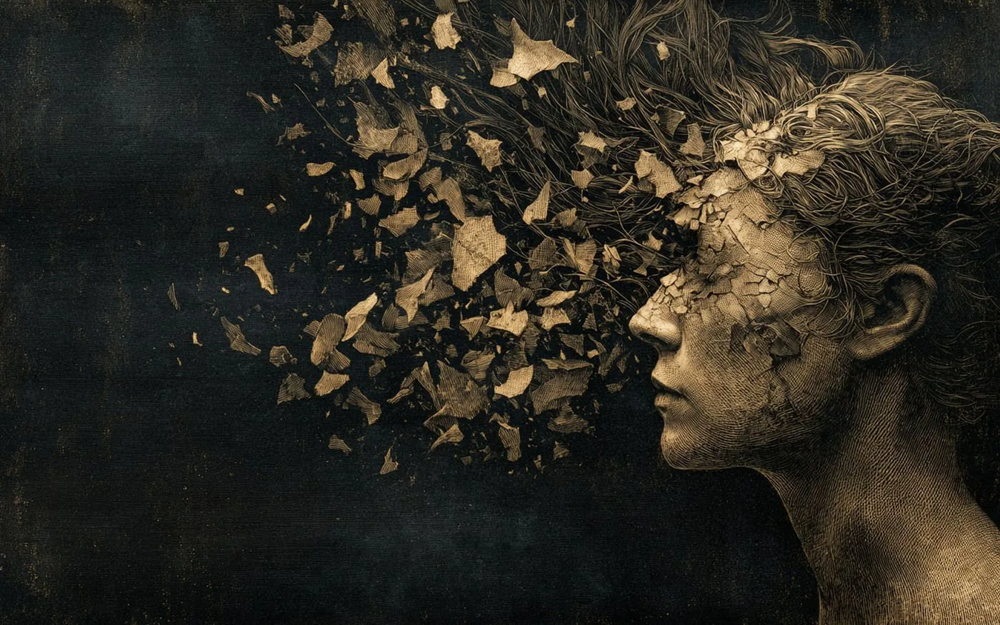
Část první · Co se rozdělilo
Technologie a umělá inteligence nám přinášejí čím dál více podrobností o čím dál menších detailech.
Náš svět více a více analyzujeme a rozdělujeme na menší a menší kousky, a tím méně máme kapacitu poskládat je do smysluplného celku.
Zaměřujeme se na vnější poznávání a ztrácí se nám vnitřní porozumění. Máme více a více horizontálního dostatku, ale méně a méně vertikálního smyslu.
Ďábel se skrývá v detailu, říká se. Diabolos, odkud máme slovo ďábel, znamená rozhozené, rozdělené na tak malé kousky, že už pro život nedávají smysl. Opakem je symbállein, to, co spojuje jednotlivosti do smysluplného celku, do symbolu.
Fragmentace, nebo sjednocení?
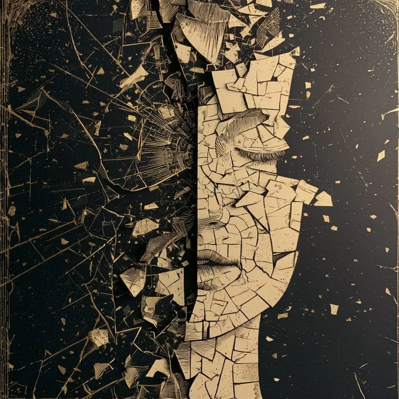
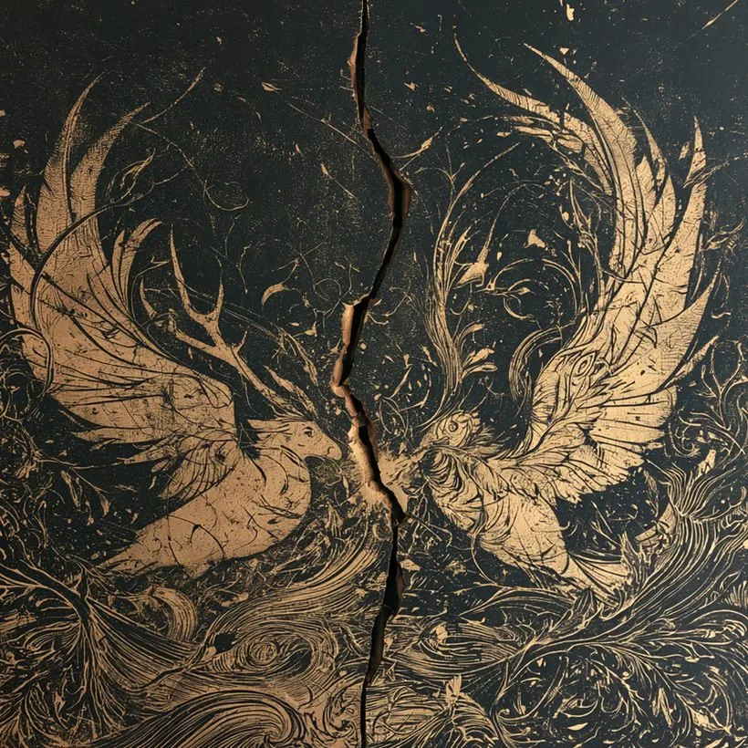
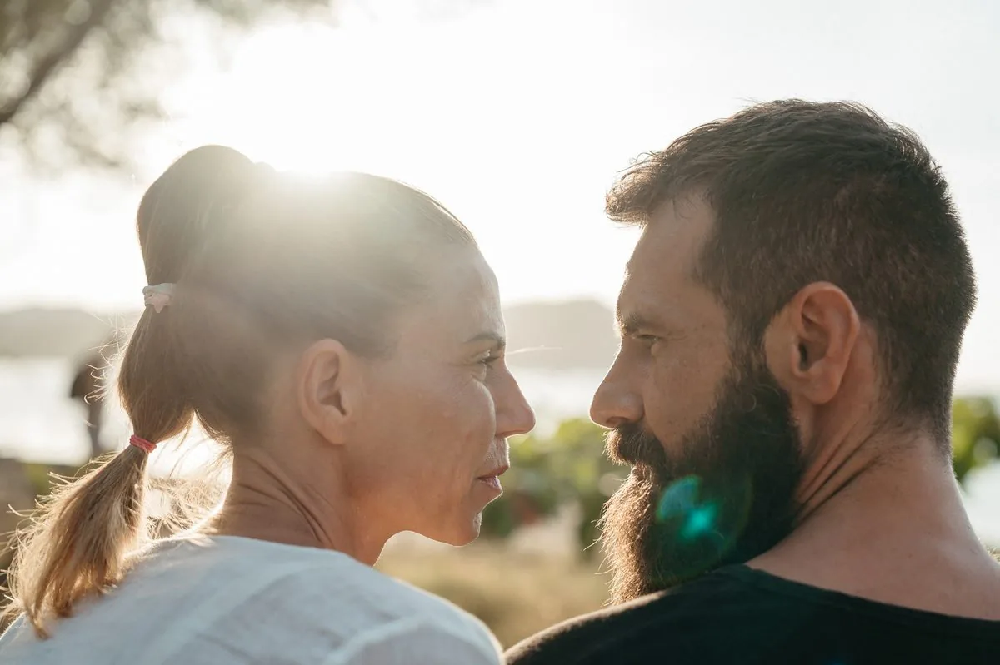
Slovo jóga i religio znamenají totéž. Spojit to, co bylo rozděleno.
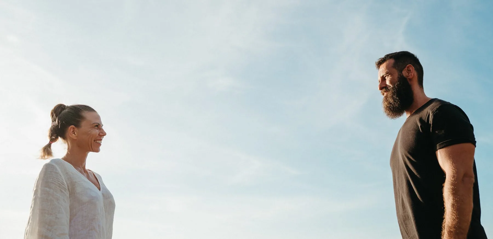
Existujeme právě proto, abychom vytvářeli prostor, kde toto sjednocení a návrat do smyslu může probíhat.
Nevytváříme další směr ani nauku jako další fragment. Ukazujeme možnosti a cesty a jdeme po nich na začátku s vámi, dokud nebudete moci jít sami.
Mise
Pomáháme vzdělaným lidem, kteří nenacházejí dost ani v materialistickém pohledu na člověka, ani v povrchní spiritualitě, porozumět svému tělu, psyché a vědomí a převést toto porozumění do každodenního života.
Propojujeme jungiánskou hlubinnou psychologii, védské tradice, práci s tělem a současné poznání. Nenabízíme rychlá řešení, ale systematické vzdělávání, osobní praxi, živé vedení a dlouhodobou komunitu.
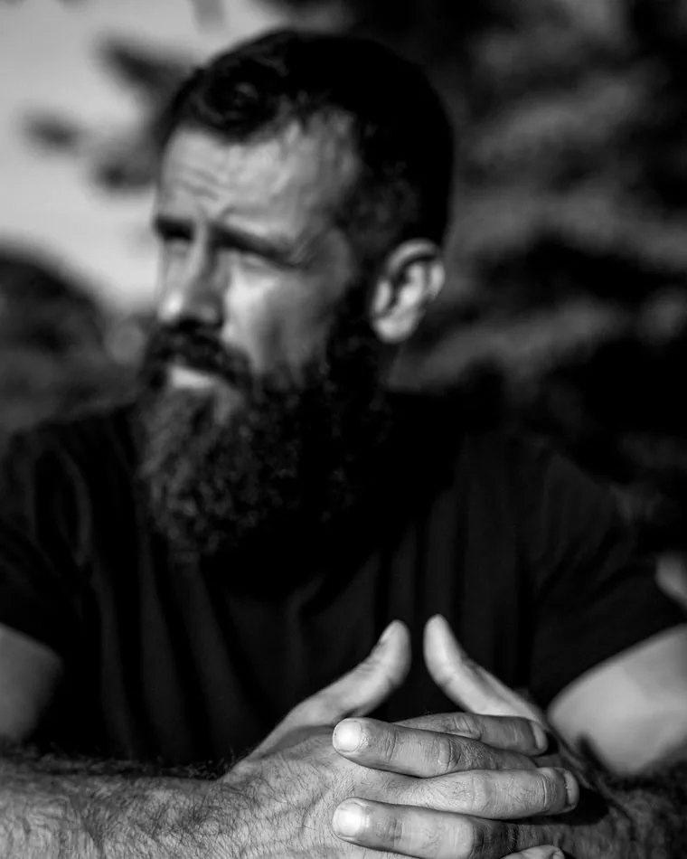
Část druhá · Dva lidé
Věnujeme se propojení hlubinné psychologie s védskými naukami o vědomí. Učíme jungiánskou psychologii, jógu, tantru, mytologii, ajurvédu a džjotiš.
V dnešní době zkratek a instantních řešení ukazujeme, že skutečného poznání ani řešení současných krizí nelze dosáhnout bez odvahy jít do hloubky.
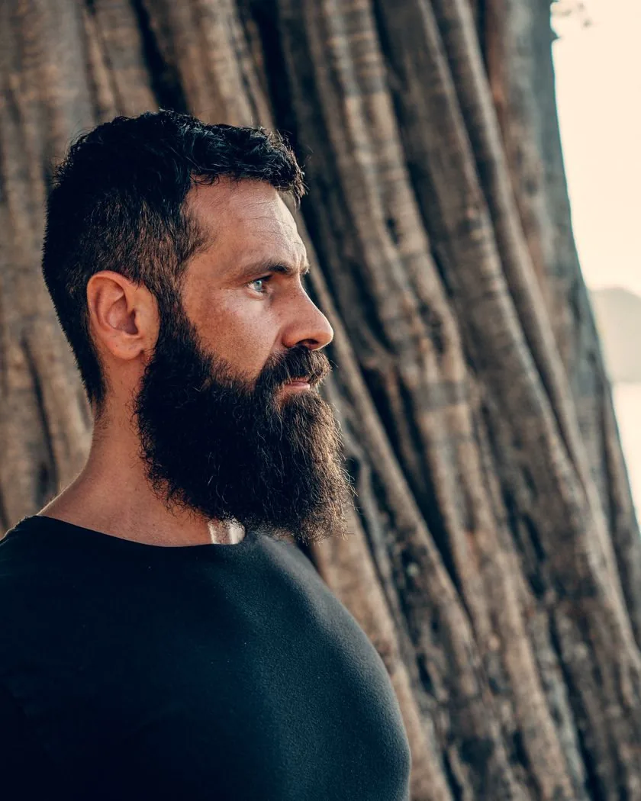
Daniel Paulus je lektor a průvodce jungiánské psychologie, jógové filozofie a védské tradice. Propojuje hlubinnou psychologii Carla Gustava Junga s autentickou tradicí Šri Vidja.
Vystudoval ekonomii a informatiku. Dvacet let pracoval ve vrcholových manažerských pozicích v mezinárodních korporacích a souběžně se třicet let věnuje osobní psychologické a duchovní práci.
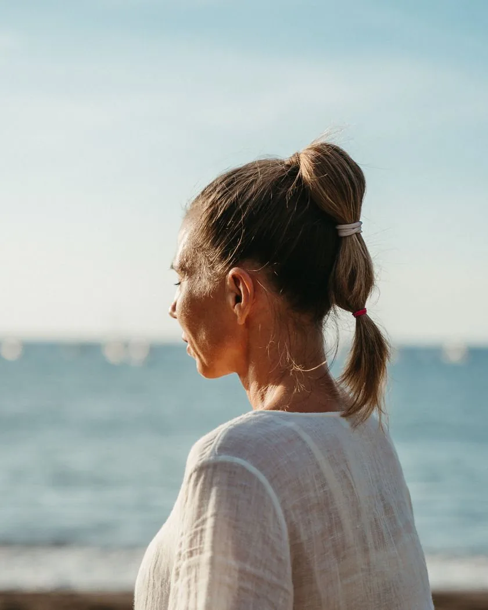
Kristýna Paulus je lektorka jógy, ájurvédská terapeutka a poradkyně védské astrologie. Tradiční ájurvédu a védskou astrologii propojuje s autentickou tradicí Šri Vidja.
Vystudovala politickou filozofii a politologii. Specializuje se na ženské zdraví a vzdělávání učitelů jógy, kteří vědí, že podložka je jen začátek.
Vesica piscis.
Všichni jsme básníky a léčiteli, když správně používáme jazyk. Člověk vytváří mandorlu pokaždé, když řekne něco, co je pravdivé.
Když mluvíte z místa autenticity, vytváříte most mezi vnitřním a vnějším světem. Když vaše slova spojují emoce s jasností, subjektivní s objektivním, tvoříte mandorlu. Pravdivé slovo není jen informace. Je to akt spojení, mezi tím, co cítíte, a tím, co vyjadřujete. Mezi vámi a druhým člověkem. Mezi fragmenty zkušenosti a celkem.
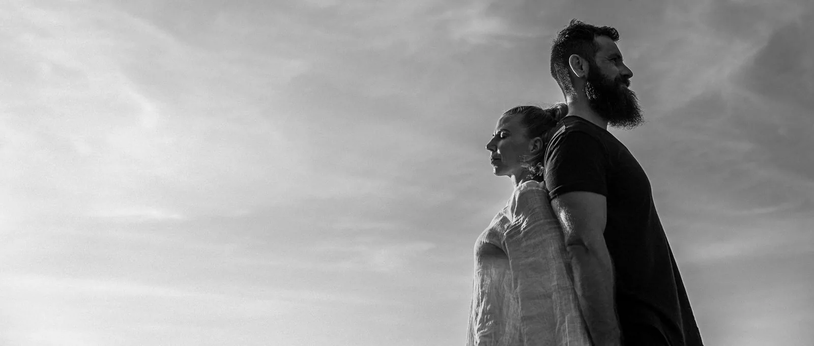
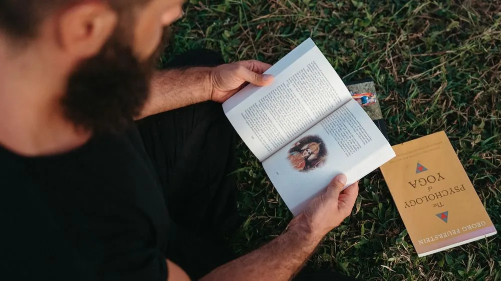
Daniel
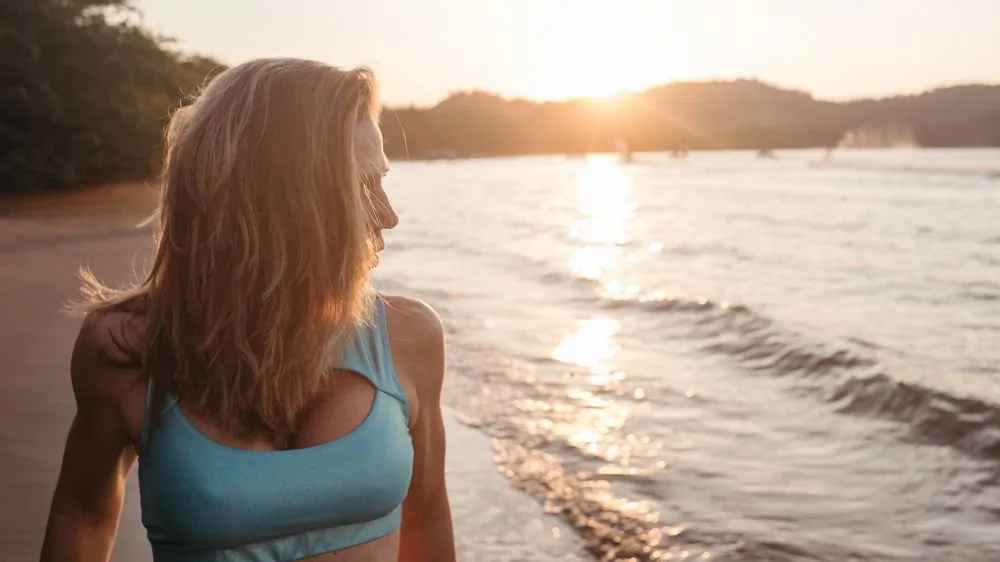
Kristýna
Linie · u koho studujeme a kde se inspirujeme
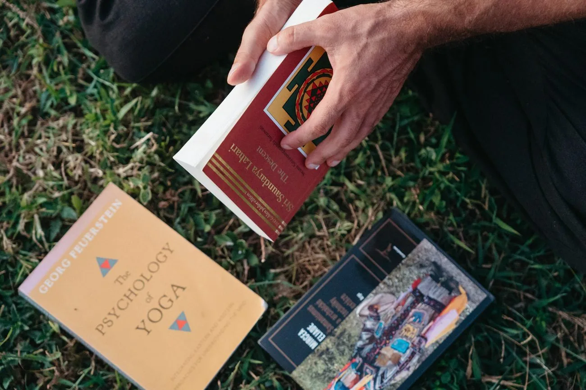
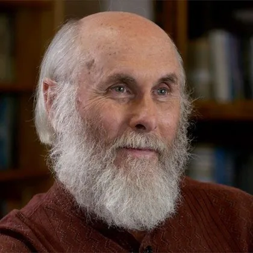
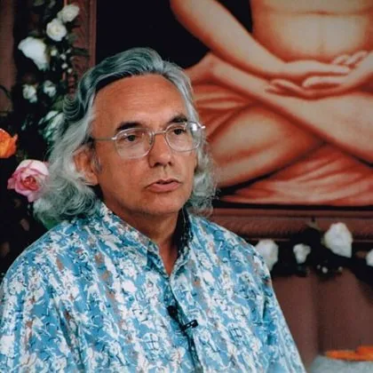
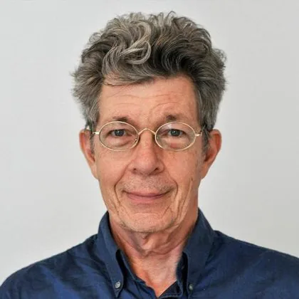
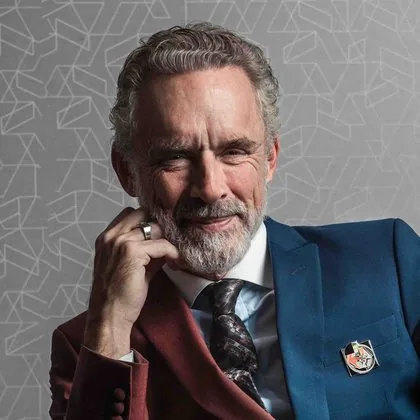
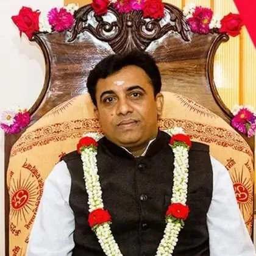
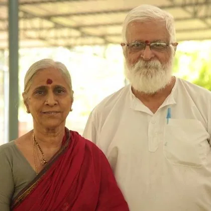
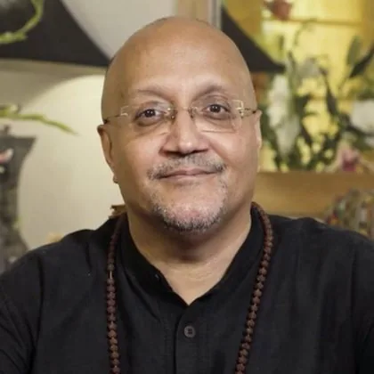
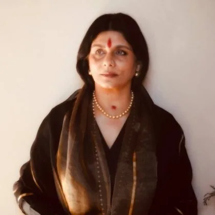
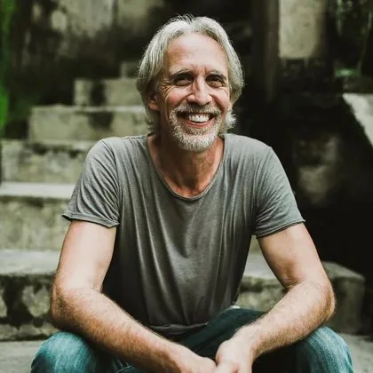
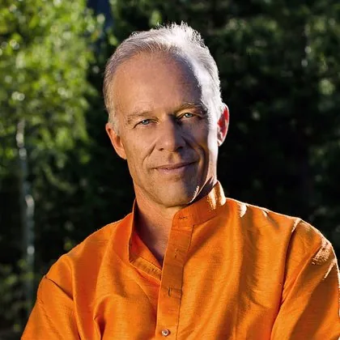
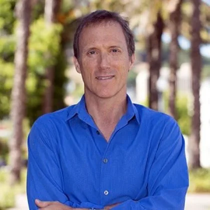
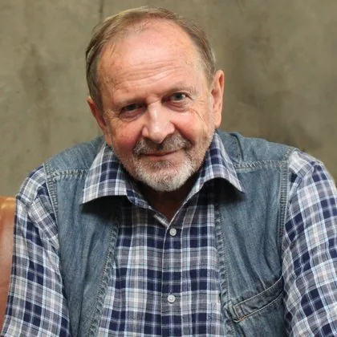
U Frawleyho absolvoval Daniel čtyři certifikační programy v AIVS, Kristýna u něj studuje ajurvédu i džjotiš včetně konzultace a čtení. Svobodovy online programy jsme prošli oba. Šri Šívapremandadži nás oba vedl více než dvouletým iniciačním procesem.
Část třetí · Co se tady dělá
Nikdo vás neposílá jinam pro druhou půlku. Někdo u toho je dost dlouho na to, aby se něco stalo. A když se pletete, někdo to řekne.
Jednotlivé oblasti bývají často dostupné odděleně. Člověk pak musí sám skládat dohromady psychologické porozumění, tělesnou praxi, tradiční kontext a každodenní život. V PAULUS mezi těmito oblastmi vytváříme vědomé vazby.
Čtyři oblasti nabídky, dvě optiky, odkazy z jednoho oboru do druhého uvnitř kurzů.
Programy na měsíce, praxe mezi lekcemi, živá skupina. Terapie je otevřená, retreat jednorázový, knihovna kurzů samoobslužná.
Dvanáctitýdenní kohorty, dva týdny praxe na modul, Satsanga po skončení, více než sedmdesát lidí v dlouhodobém vedení.
Učitelé jménem a roky studia. V textech je oddělené, co říká tradice, co ukazuje výzkum a co je vlastní výklad.
Jmenovitě uvedení učitelé, zdroje pod texty, autor a datum u každé stránky, žádné certifikáty.
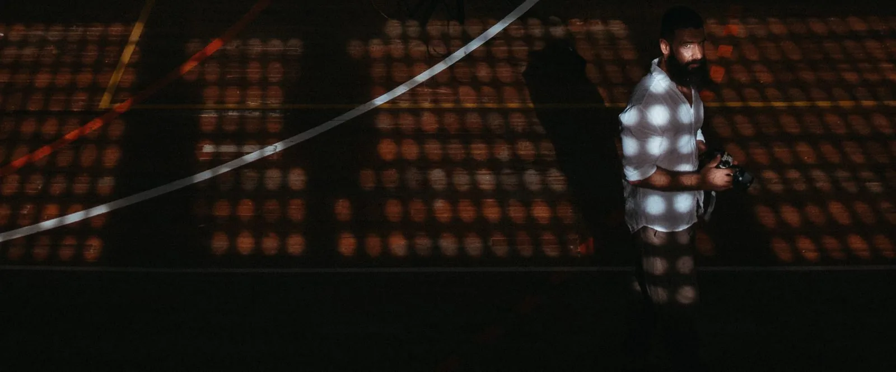
Srozumitelnost
bez zjednodušování
hlubokých témat.
Odpovědnost za jazyk
Složité téma lze předat srozumitelně, aniž se odstraní jeho napětí, hranice a souvislosti. Proto rozlišujeme, co pochází z tradice, co ze současného poznání a co je náš vlastní výklad.
Metoda · proč obojí
Jungova psychologie nabízí západní jazyk pro dynamiku nevědomí, stínu, projekce a individuace. Pomáhá rozpoznat, co se v člověku odehrává mimo jeho vědomou kontrolu a jak se to promítá do vztahů, rozhodnutí a duchovní praxe.
Védské a tantrické tradice uchovávají jiné mapy člověka a konkrétní způsoby práce s tělem, dechem, myslí, energií a vědomím. Nevznikly ze stejných předpokladů a neříkají jednoduše totéž co Jung.
Stavíme je do rozhovoru tam, kde se mohou vzájemně osvětlit. Psychologie může pomoci rozlišit psychický materiál, který se v duchovní praxi otevírá. Tradice může nabídnout dlouhodobou disciplínu a praxi, u níž samotné porozumění nestačí.
Nejde o jejich sloučení. Jde o přesnější rozlišování toho, co se v konkrétním člověku právě děje a jak s tím pracovat.
Kdo sem přichází · a s čím
Něco se zlomilo
Rozvod, nemoc, vyhoření, ztráta. Odklad, který došel.
Potřebuju to vyřešit, ne studovat. Odpovídá na ni rychlost prvního kontaktu a to, že vás nikdo neodešle na kurz.
Ví o sobě hodně, ale zvenku
Knihy, podcasty, umělá inteligence. Umí pojmenovat svoje vzorce a nezměnilo se nic.
Tohle už znám. Odpovídá na ni první úkol, který je zážitkový, ne výkladový.
Přišel tělem
Cvičí roky a naráží na to, že tělo samo nestačí.
Psychologie mě nezajímá, chci praxi. Nevyvrací se. Ásána a ajurvéda jsou plnohodnotná cesta a nemusí nikam pokračovat.
Něco se otevřelo
Retreat, dýchání, silný sen, krize. A není kde pokračovat.
Chci zpátky ten stav. Odpovídá na ni rozdíl mezi zážitkem a integrací. Zážitek se opakovat nedá a nemá.
Nejčastěji sem přichází vzdělaný dospělý mezi pětatřiceti a pětašedesáti, který už prošel mainstreamovou psychologií nebo mainstreamovou spiritualitou a ani v jedné nenašel dost.
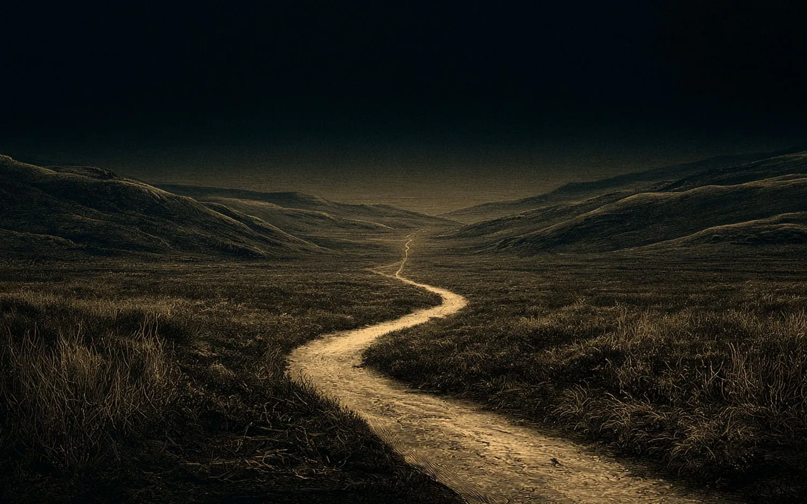
Cesta · tři kroky
Vstupní bod se liší podle toho, kterými ze čtyř dveří přicházíte. Někoho čeká osobní vedení, jiného kohorta a jiného praxe s tělem. Začátek proto nevypadá pro každého stejně.
Kohorta na měsíce, nebo šest měsíců osobního vedení. Mezi lekcemi praktikujete, skupina jde ve stejném čase a když se spletete, někdo vám to řekne.
Cílem není, abyste tady zůstali. Poslední lekce každého programu ukazuje, jak pokračovat vlastní praxí. Šest měsíců osobního vedení má domluvený konec a závěrečný rozhovor.
Pro všechny, kteří s námi kousek cesty šli, zůstává otevřená bezplatná komunita Satsanga.
Manifest
Odvaha jít do hloubky
Nikdy jsme neměli více informací a jednodušší přístup k nim. A přitom toho o sobě a o svém místě ve světě víme čím dál méně.
Náš svět analyzujeme a rozdělujeme na stále menší kousky, a tím méně máme kapacitu poskládat je zpátky do celku. Zaměřujeme se na vnější poznávání a ztrácí se nám vnitřní porozumění. Máme více a více horizontálního dostatku, ale méně a méně vertikálního smyslu.
Rozdělil se i člověk. Tělo řeší jeden obor, psychiku druhý, smysl třetí, a žádný z nich neví o těch ostatních. Spiritualita bez stínu, psychologie bez vědomí, praxe bez porozumění a porozumění bez praxe.
Nevěříme, že tomu chybí další technika, další rychlá odpověď nebo další motivační návod. Chybí orientace. Schopnost porozumět tomu, co se odehrává v těle, co člověka řídí z nevědomí a co od něj žádá život.
Slovo jóga i religio znamenají totéž. Spojit to, co bylo rozděleno. O to nám jde.
Hlubinná psychologie pomáhá vidět, co o sobě nevíme. Védské tradice uchovávají po staletí ověřované způsoby, jak pracovat s tělem, myslí, energií a vědomím. Současné poznání umožňuje pokládat nové otázky a ověřovat, co funguje.
Nevytváříme nový univerzální systém a netvrdíme, že všechny tradice říkají totéž. Překládáme mezi jejich jazyky, ukazujeme jejich podobnosti i rozdíly a hledáme, co je pravdivé a použitelné pro konkrétního člověka.
Nevěříme v rychlou transformaci. Skutečná změna potřebuje čas, praxi, vztah a ochotu setkat se i s tím, co není příjemné.
Neučíme jen to, co jsme přečetli. Učíme to, co sami praktikujeme, čím jsme prošli a za co jsme ochotni ručit svým jménem. Proto také otevřeně rozlišujeme, co říká tradice, co ukazuje současný výzkum a co je naše vlastní zkušenost a výklad.
Poznání nekončí porozuměním. Musí se projevit ve způsobu, jak člověk zachází se svým tělem, vztahy, prací, mocí, odpovědností i světem kolem sebe.
Nechceme vytvářet následovníky. Dobrý učitel člověku nebere odpovědnost za jeho život, pomáhá mu rozvinout schopnost rozlišovat.
Proto PAULUS existuje. Aby to spojování mělo kde probíhat.
Nevytváříme další směr ani nauku jako další fragment. Ukazujeme možnosti a cesty a jdeme po nich na začátku s vámi, dokud nebudete moci jít sami.
Daniel a Kristýna Paulus
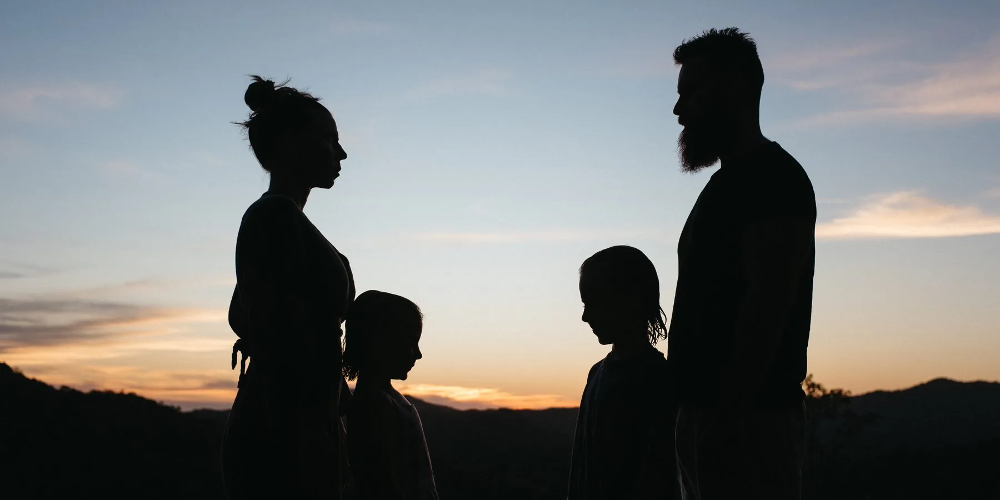
Učíme to, co sami žijeme.
Vše, co učíme, se prověřuje životem, ne na podložce.
Kam odsud
Odvaha jít do hloubky